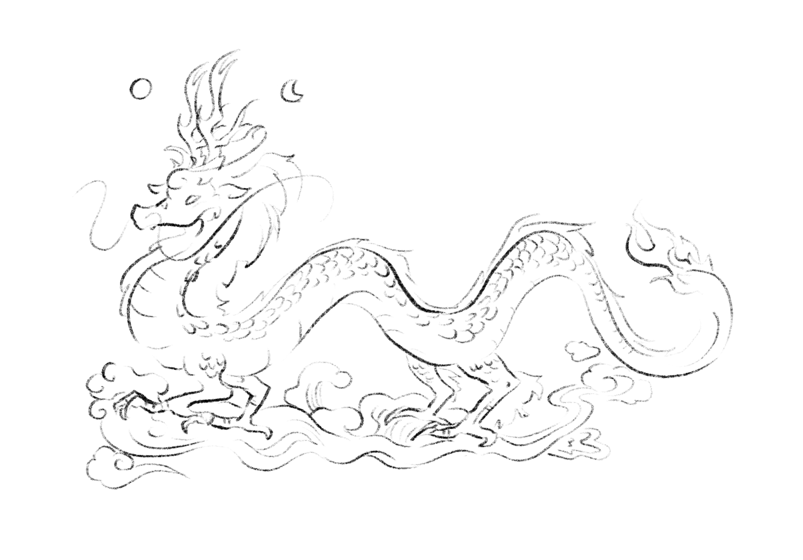

Location: Bamboo Forest - White Tiger Temple
Time: 23:30pm； Temperature: 17°C (62°F)； Humidity: 89% - Very Damp； Wind: Gentle breeze from the northeast
Dark clouds covered the full moon and the sky was as black as ink. Rustling sounds came from the grass in the countryside, and evil forces seemed to surge through the silent bamboo forest. The dark green bamboo leaves swayed in the breeze like the claws of monsters waving. Several dark shadows flashed out from among the bamboo towards the nearby village, they moved so fast that only the remnants of their shadows could be seen. The leader was a tall man and today was the day he decided to massacre the village. “Keep up! Let’s see who can get more women!” He urges those behind him sharply but realizes that no one is responding to him. When he turned around, all he saw were black bodies lying in the bamboo forest, surrounded by silence. "He gulped, his gaze fixed on the forest’s endless blackness, catching his breath. Suddenly, he roared into the void, “Who are you? Stop hiding!” Just as he was about to turn, a sharp, ice-cold sword pressed against the back of his neck, sending a shiver down his spine.
“White Loong?” he asked shakily. No answers came from the figure behind him. Gritting his teeth, he summoned the last of his courage, drew a dagger, and thrust backward, but all he saw was a flash of cold light and his sight fell, his head dropping heavily onto the muddy road. He was in severe pain and tried to struggle with his body, but only his head rolled on the ground. He finally saw the figure behind him. At that moment the dark clouds parted and the bright moonlight poured over the mysterious presence. He immediately noticed a sparkling golden dragon embroidered on the person's pure white, silk-made robe. The white-clothed man took off his bamboo hat and mask as if he was relieved. The head on the ground stared in horror and used his last strength to speak weakly:
“You are a woman?”
Shanghai, China 9.19.2024
Devlog: The Initial Decision of Mechanics and Gameplay
Evelina’s thoughts return to the meeting from last night’s battle. Several of the boys present are still voicing strong arguments about what game to make. She initially thought that this game jam, initiated by herself, could be less male-dominated or at least give women more of a voice, but things didn’t go as she had hoped. The boys were enthusiastically debating and leaving the girls sitting on the side. She doesn’t understand why the boys are so intensely passionate about video games, and she doesn’t understand why they’re all so smug, convinced that their ideas are superior. The other girls are already playing with their cell phones and talking to each other, seemingly prepared to wait for the boys to finish arguing and assign them various tasks, just like countless game jams before. They have numbly and habitually found their niche automatically in a world dominated by men.
“The theme of the contest is Light, so I’m thinking of adding five different lights to the game: purple, blue, green, orange, and white. Each light has its own effect. For example, when the player touches the green light, they will shrink. And over here? It’s a void. Fall in, and you won’t die immediately—it’s an Easter egg! Can you believe it? Haha! After you start the second playthrough, the triple jump is unlocked! You can jump like this, boom, boom, boom! Holy crap, I can already imagine how players will react. We will win this game jam! ” The boys enthusiastically clapped for the speaker, occasionally chiming in with cheesy or inappropriate jokes that had nothing to do with game design, trying to appear popular and making the crowd burst into laughter.
The speaker is Evelina's least favorite guy—a classic traditional Chinese patriarchal type who, ironically, got himself a ridiculous perm after going to study in the U.S. He constantly brags to others about his "study abroad experience" (even though both he and Evelina attend the same university in America). On top of that, he loves to show off his meager internship experience—an opportunity he only got because Evelina helped him land a one-week stint at her uncle's company. (During that week, he not only failed to show any gratitude but also shamelessly mooched off Evelina’s uncle’s hospitality, eating for free at every meal without saying a single “Xie Xie” or paying a dime.) His name is Leon, but he’s given himself five or six different online aliases and insists that his friends call him by those nicknames. People who don’t know him might even think he’s some kind of “pro esports player” or something.
Leon has always been obsessed with being in control, he wants to be a leader and he feels that he is the chosen one. But he has zero experience in game design—whether it’s using game engines, drawing, or programming, he’s terrible at all of it. The only good thing about him is that no matter how shit an idea he comes up with, he can speak about it with a straight face and an impassioned voice. Evelina, however, takes game design in both her university and community college and studies different game engines, visual and level designs. She is somewhat influenced by Confucian ideals and doesn't like to flaunt her talents, but she is certain that she is ten times more capable than that man who is all show and no substance.
“ We only have 1 month to develop. Why are you thinking about the second playthrough? You haven’t even drawn out the level design of the first one.” Evelina can’t stand it any longer, and she is going to stop the boys' antics all by herself. But they are silent for just a short while and begin to discuss heatedly again. Evelina shrugs awkwardly and sighs helplessly. She was the one who initiated this competition and built the entire team, but simply because she’s a girl, she has no voice in the gaming field. The boys are the commanders of the war, powerful decision-makers, and leaders; while the girls are relegated only to tasks like drawing and writing, simply obeying every goddamn arrangement thrown their way. Leon, like a parasite, latches onto Evelina whenever he sees a chance to benefit from her. He clings to her, climbs over her, and sucks her dry until Evelina is left drained, while all the valuable resources flow to him—a man whose only advantage over Evelina is a single biological organ.
The meeting ends with “nothing of value discussed.” Yet, everyone feels drained, having wasted so much energy on meaningless topics. Deep down, there is a sense of unease among them: a month isn’t a long time, and their very first meeting has ended on such an awkward note. No one is sure if this team can actually pull off making a game.
Evelina feels a bit frustrated, thinking that maybe she could have prevented what just happened. She feels that this game jam is inevitably heading toward the same disastrous outcome as the last few jams under the leadership of David, Rocky, Arthur, or another boy who has nothing but passion. She wants to be the leader, guiding these lost lambs back onto the right path. But then another thought strikes her—wouldn’t that be just as arrogant? Like the man in front of her, endlessly bragging about how he is going to revolutionize the gaming industry? What gives her the right to think she can do any better?
Location: West side of Lotus Pavilion
Time: 15:30pm; Temperature: 19°C (66°F); Humidity: 80% - Lightly damp Rain: Light drizzle; Wind: Calm breeze from the south
White Loong sat silently on the bridge, sipping the wine she took from the bandits yesterday, staring at the misty sky without a word. The rain hit her face, and she didn’t flinch. Her white satin robes, once pristine, were now stained and muddied by the filthy bridge beneath her. She didn’t seem to care, lost in her thoughts, letting the world around her blur as the rain continued to fall. She didn’t care—she really didn’t give a damn. She couldn’t even feel the cold of the rain anyway. Soon, her inventory would be empty. Annoyed, she decided to get up, but before she could, a raspy voice called out from behind her:
"Little girl, got something on your mind? Come lah, don’t be shy! Have a chat with this old man." From the lake emerged an old man with a lotus leaf on his head. His entire body was covered in plant roots, and his long white beard trailed down, dipping into the water below—he was a lotus spirit. He casually plucked a lotus flower and waved it over White Loong’s wine flask. In an instant, the flask was once again filled to the brim.
White Loong stared blankly at the lake, completely ignoring the old man and not using the item the NPC had given her. Like a machine, she was about to turn and leave when the old man behind her leisurely began to chant a line of poetry: Laughable, laughable, the phoenix seeks to soar. Yin and Yang reversed, chaos reigns evermore.
Shanghai, China 9.27.2024
Devlog: Game in Development
The project has been underway for a week, and Evelina hates Leon to the core. She wishes she could silence this blabbermouth once and for all, as easily as killing off a character in a game. What infuriates Evelina the most is that Leon did not assign nearly a third of the female members any tasks. Meanwhile, Leon takes on a whole bunch of work for himself—he's the planner, the PR, the level designer, and the project manager all rolled into one. Honestly, those roles would look great on a resume. But this goes against the very purpose of the project Evelina started. She only wants to gather her friends and happily make a game together, not be forced to obey a leader like a dog. She feels it's unfair that the other girls are being neglected.
Another issue is that another planner is being forced out by Leon. He is one of Evelina’s friends, one of the few in the team who remains rational and organized, and the reason Evelina has stayed on this project. She feels the leader shouldn’t be Leon, but him—someone who has actually developed games and understands the struggles women face. But Leon’s thirst for power is like that of a starving wolf and he can’t tolerate anyone with a different opinion. He is the only dictator. He quietly pulls a few close teammates into voice chats, badmouthing the guy and leading the effort to ostracize him. Eventually, the guy can no longer endure Leon’s slander and leaves the project. To Evelina, his departure signals the death of the project.
Although Evelina knows how everything will end, she stays. She, too, is driven by a thirst for power. She wants to step in and take the place of the guy who left, helping to plan the rest of the project. She wants to be an enlightened ruler, not a brutal dictator. She wants to take back everything that should belong to everyone from the hands of that idiot Leon. She wants every team member to grow from this project.
But right now, the girls in charge of art have no idea what kind of game they're even making. Leon just tells everyone what object they need to draw, and they submit it like handing in homework. Girls, like in ancient China, are confined to their rooms to embroider flowers; they have no idea what the outside world is like. Leon then plays the role of the overworked, complaining collector, only to whine about how he can’t come up with new-level designs. Pure bullshit. In fact, there are two other planners in the team, and they could easily handle the design as well. Now, they’ve realized that Leon only cares about having his big name on the game’s main interface. Gradually, they’ve withdrawn from the stage, and all initiative has been handed over to Leon. He’s the one who took away other people’s opportunities, yet he hypocritically complains about how much work he has and how tired he is, while also accusing everyone else of not helping him.
"I thought at least we could know what kind of game you're making. We're all team members—why are you keeping it from us?" Evelina demanded. "You don’t understand. There are too many people in the team, it’s hard to manage. Not everyone needs to know what we’re doing," he replied without even looking up, his hands still typing away on the keyboard, creating some superficial work schedules.
"What’s the story of our game?" She tries to make eye contact with Leon, but once again, she fails.
"Mini-games don’t need a story," he responds coldly.
"How can there be no story? The story is the soul of the game!" Evelina feels truly desperate now. She recalled a line from her professor in community college, who once worked in Quantic Dream: “A good story determines whether a game is successful or not.” This statement deeply resonated with her, becoming a belief she held for every project.
"No one will care about the text you write. The judges will only be impressed by the game mechanics," Leon retorts.
"Cavemen don’t think about game mechanics when they play with sticks. They only care about whether it’s fun." Why did he make games so serious? She thinks in her mind.
Leon finally lifts his explosion-like hairstyle, speaking disdainfully. "If you’re not satisfied, you can leave the team. Now."
Those words strike Evelina like lightning.
"What did you say? You dare say that again?" Evelina’s body trembles with rage. "I’m the one who started this project. You’re just someone I invited. And now you want me to leave? Do you think I like you? At the last 48-hour game jam, you abandoned me and the programmer. We worked overtime for two nights without sleep. Then, as the planner, you don’t even show our demo during the presentation just because you’re embarrassed by the bugs? You’re a coward, Leon! You can’t even be a decent person, and you think you can make a game?" Leon freezes for a moment, clearly not expecting the girl to react so intensely. She roars like a loud, raging beast, making the very ground tremble beneath her. Realizing he is in the wrong, his usual boasting mouth falls silent.
Location: Jade Buddha Mountain—Sacred ruins
Time: 8:49 am, Temperature: -10°C (14°F), Weather: Strong northwest winds in some areas, exp+50
White Loong hasn’t been here in a long time. Her log-ins became fewer and fewer. She placed the broken lotus on the altar and then began to wipe her sword. Her white robe was stained not only by the dirt from the last time but also by a color she had long since grown accustomed to.
On the snow-capped mountain, a scene of the sun and moon hanging high in the sky appeared, yet she seemed to take it all in stride. In her mind, the image of Wu Zetian, the Empress of the Tang Dynasty, comes to her. Wu Zetian is the only female emperor in Chinese history. She gave herself the name "Zhao" (曌), with the upper part of the character symbolizing the sun and moon, and the lower part representing sky. This character signified the balance of Yin and Yang, showing that women, like men, could hold equal power. It also standed as a symbol of her unparalleled status.
Of course, Evelina, the 21-year-old young adult, didn’t want to become a man (or perhaps sometimes she does). Nor did she aspire to rule the world like Wu Zetian. All she wanted is a bit of fairness in her everyday life. She didn’t like people to categorize everything—Yin and Yang, MBTI, zodiac signs— life was full of unknowns and complexities. Like games, when cavemen played with sticks and mud, they didn’t think games belonged exclusively to men. And yet, somehow, people in the 21st century seemed to be falling behind even the cavemen.
Shanghai, China 10.13.2024
Devlog: Final Submission and Future Account Management
This project nears its end, with most of the game already completed and currently in the competition evaluation stage. Since the last argument, Leon rarely assigns tasks to Evelina, gradually marginalizing her role in the team. He even subtly implies during meetings with others that Evelina is slacking off. Although most of the team members are Evelina's friends, Leon quietly influences them to distance themselves from her. At first, Evelina has no idea this is happening—until one of her friends comes to talk to her.
"I need to tell you something, Evelina, and I’m really sorry." Lucy Lee nervously wrings her hands, glancing around anxiously. "Leon is hosting a celebration party, but he didn’t invite you. Everyone else is attending."
Evelina freezes. She is the one who initiated the project, while Leonis is merely a project manager.
"Evelina, I’m truly sorry. None of us knew you weren’t invited—we’re all shocked. The thing is, Leon seems to be planning to get the team to work with him on his own game later, probably for his graduation project."
Evelina immediately understands the implications. She and Leon are in the same graduating class, which means Leon will monopolize the university’s resources and connections in game design. When that happens, no one will be available to help her.
In the future, in this male-dominated major with only a few people in this field, Evelina knows she won’t be successful again. Her friends have all become mere puppets under Leon’s control, and she can’t make a whole game on her own. She needs like-minded partners, but they are few and far between—many of them betrayed her because of a man’s sweet words. She feels deep despair, but she’s not willing to give up. She stays up late every night studying game design, spending her free time researching games. She works tirelessly on her portfolio and resume, but it’s not enough to compete with a leader who has no talent but commands others. If she could start over, it seems impossible to change anything. The only way she could turn things around would be to become a man, using the two lumps between her legs to give herself unmatched confidence.
That night, Evelina can’t sleep. She lays awake in her white pajamas, silently sobbing on the bed. She cries for what feels like an eternity, until finally, she stands up, sits down at her desk, and logs into the game.
A girl in a white robe appears on the screen. Evelina equips her with a mask and a bamboo hat. Staring at the character she knows so well, she recalls countless nights of excitement, running and jumping through the game. She has spent thousands of hours playing, researching strategies, and mastering every detail—yet it seems meaningless compared to someone who merely had one advantage she didn’t: being born a man. And worse, his taste and understanding of games were crass to the extreme.
Why? Why, when everyone shares the same passion for games, does his enthusiasm suffocate her? She remembers telling her mother that her lifelong dream is to become a game developer. But if this is what the work environment is like in college, can women in the gaming industry ever truly have the power to change anything? Even if she graduates and lands a job at a good game company, will she still have to take orders from those men, creating shallow, uninspired games? What’s the point of studying this profession if that’s all she becomes—a cog in the machine, unable to become a leader? Her dream is dying, slowly fading away.
Evelina reached out, gently stroking the face of White Loong on the screen. Her voice quivered as she murmured, "I’m sorry, Ma. Your daughter has failed you." She couldn’t feel her heart beating, as though she had lost all sense of meaning in her existence.
The night sky over Shanghai is as tranquil as a pool of black water—until a white figure descends like a flying dragon, crashing heavily onto the hood of a private car. The car's alarm blares, piercing the quiet, and lights begin flickering on in the surrounding residential buildings. Half-asleep residents, unsure of what has just happened, only hear a sharp, blood-curdling scream echo from below. Moments later, police seal off the scene.
In that instant, Evelina truly becomes the White Dragon.
Location: Asura's City– Abandoned Village
Epilogue
Time: 13:17pm, Humidity: 89%, Weather: cloudy, Temperature: 18°C (64°F)
Two warriors walked through the quiet, abandoned village, discussing the latest trending topic—the news of a well-known female player from an MMO game who had fallen from a building. "I think this woman was just too fragile. Why punish yourself for someone else’s mistake?" one of the players, with a red beard, scoffed. "I think she’s a brave person. Perhaps her decision to leave like this will draw more attention to the struggles of female players," the other, wearing a green cloak, commented quietly. As they spoke, they arrived at a dilapidated wooden house and pushed open the door. Inside, the room was filled with candles of varying heights, casting a soft glow that lit up the dim wooden shack. The abandoned village—once a place no player would bother to visit—now saw a variety of people entering the house and leaving candles with messages. The flames danced in the room, and on the altar, there was a black-and-white photo of a girl in a white robe. As the two figures stepped inside, several female players walked out, making some space for them in the cramped room. The red-bearded man and the green-cloaked figure also left their candles and then offered incense to the White Loong. The two remained silent, staring at the photo for a long time, until half an hour later when they finally left the small wooden house. On their way back, neither of them spoke, walking through the withered forest filled with the scent of death. The one in the green cloak spoke first: "Leon, you shouldn’t do this." The red-bearded man said nothing. After a long silence, Leon let out a deep sigh. "I don’t think I’ve done anything wrong…" Lucy Lee immediately drew her sword and pointed it at Leon. "You disgust me." The two were almost about to fight, the atmosphere suddenly tense to the extreme. But suddenly, a white figure darted through the trees. Both of them froze, their eyes wide with shock. "Did you see that? Was that..." Lucy Lee shouted. "Impossible, she’s dead!" Leon screamed, so frightened that he almost fainted. The white figure vanished like lightning, disappearing into the depths of the forest, leaving no trace behind. “White Loong!” They wanted to chase, but they could never catch up. The White Loong had become a legend in the world of video games. Many players claimed to see her in the game around 3 a.m. every day, while others said it was a self-made publicity stunt by the game companies. However, many female players shared stories of seeing a girl dressed in white satin, always smiling and helping female players who were pushed aside by prejudice. She could be the White Loong herself, or perhaps White Loong was imitated by the growing number of female players and game developers inspired by her, stepping forward to stand up against the bias.